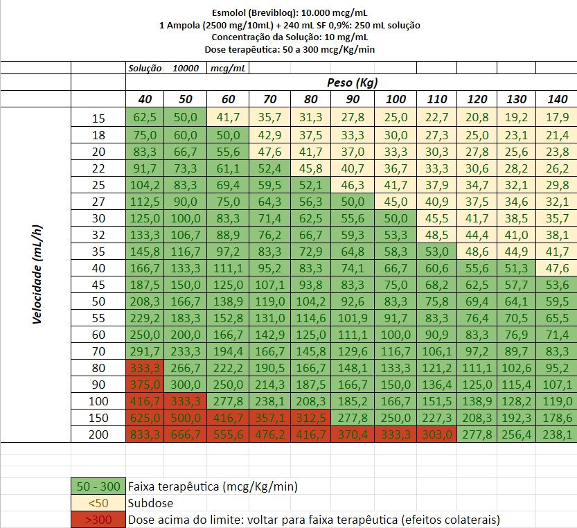
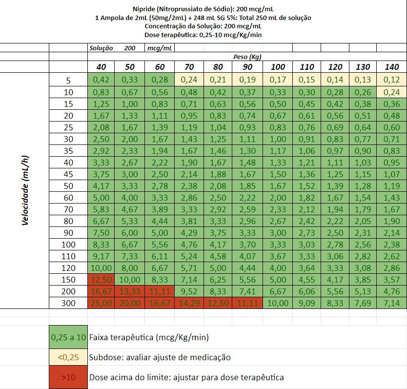
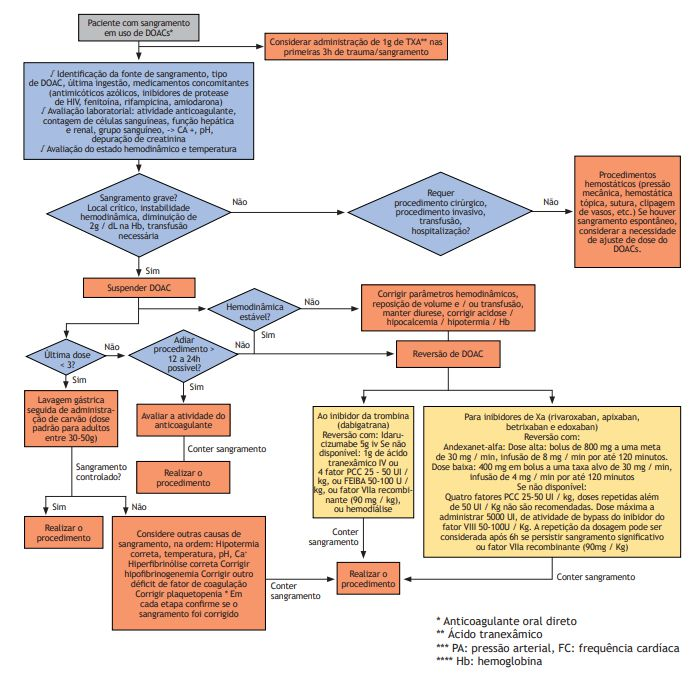
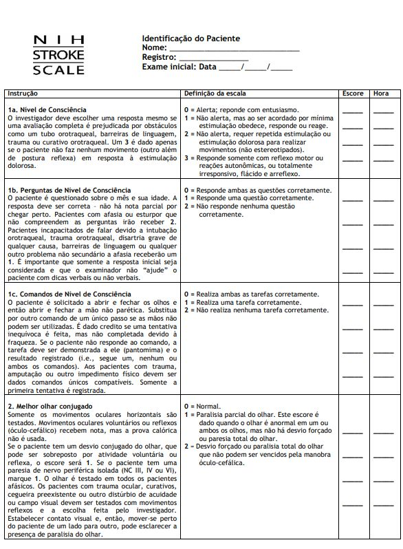
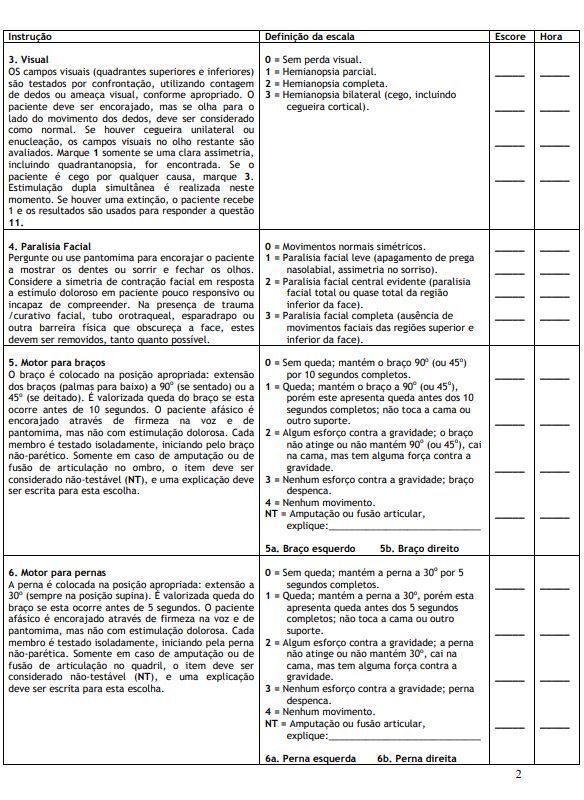
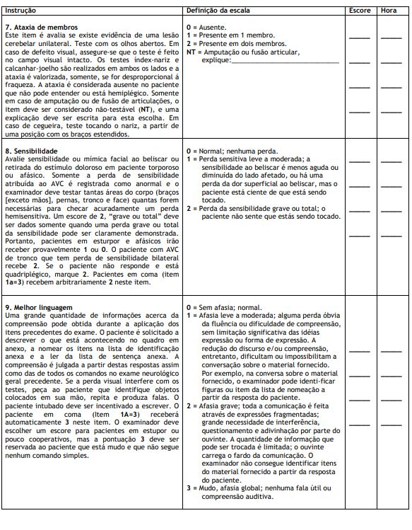
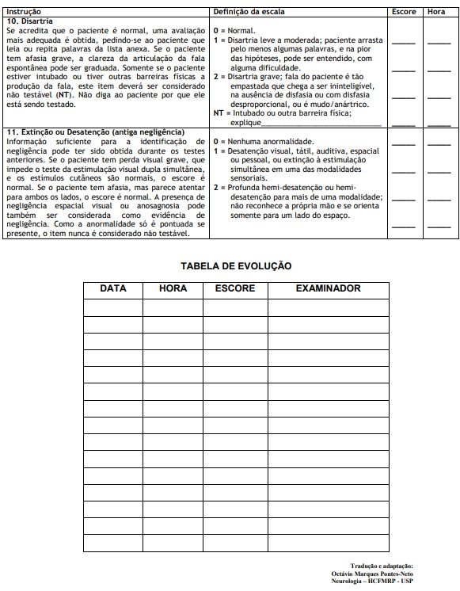
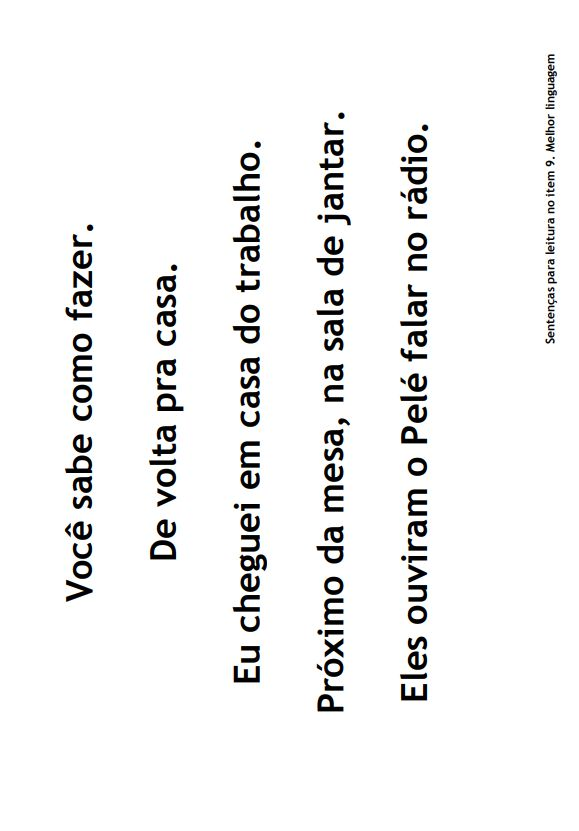
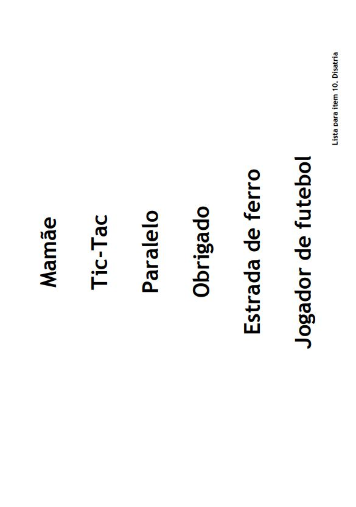
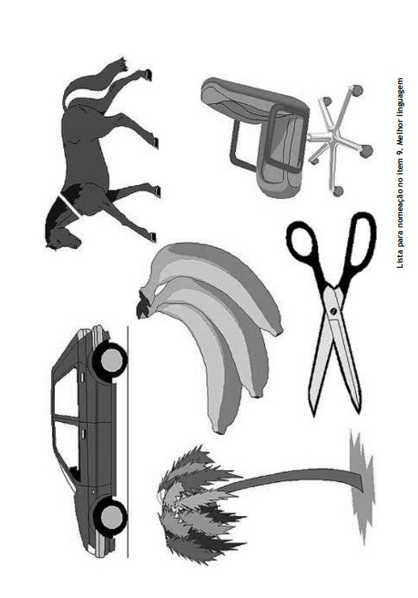

AVC isquêmico x AVC hemorrágico (TC Crânio com sangramento)
AIT: Ataque Isquêmico Transitório (reversão dos sintomas)
Paralisia Facial Periférica (Bell)
Hipoglicemia
Crise Convulsiva
Ansiedade: síndrome conversiva
TRATAMENTO
MCC + PNI + OP + Dieta Zero + Sintomáticos + HGT 1/1h (manter < 180 mg/dL)
Acesso salinizado (periférico: 2 acessos calibrosos) + Cabeceira 30 º
Avaliação Fonoaudiologia < 24h: avaliar medicamentos com espessante e disfagia AAS 200 mg + Atorvastatina
80 mg
AIT e AVCi (sem trombólise) + TC Crânio (sem sangramento): imediato
AVCi com Trombólise: aguardar > 24 horas Profilaxia TEV
Sem Trombólise + TC Crânio (sem sangramento): Enoxaparina 40 mg SC (1x/dia)
AVCi com Trombólise: profilaxia mecânica
Dor: Novalgina 1g IV, até 6/6h (avaliar sangramento)
Náusea/Vômito: Ondansetrona 8mg IV, até 6/6h (avaliar sangramento)
Reavaliação Imagem: TC ou RM Crânio < 24h Controle da Pressão Arterial no AVC Isquêmico (ou AIT): PA (PNI
15/15min)
Trombólise: Manter PA < 185/110 mmHg antes do AVC agudo
Manter PA < 180/105 mmHg nas 24h após Trombólise
Não vai Trombolisar: manter PA < 220/120 mmHg
AVCh em torno PAS 140
Metoprolol 5 mg IV (5 minutos), 10/10 min, até 20 mg
Esmolol ou Nitroprussiato: abaixo
Rebaixamento do Sensório (Escala de Glasgow < 8): Intubação Orotraqueal (IOT)
2. TROMBÓLISE E REPERFUSÃO
TROMBÓLISE (ΔT< 60 min da admissão): sempre que possível discutir com Neurologia
Indicação
ΔT < 4,5h do início dos sintomas: se acordou com sintomas, considerar último horário
em que estava assintomático
TC Crânio sem hemorragia, Idade >18 anos + Ausência de Contra Indicação
NIHSS compatível ≥ 5 ou déficit significativo (discutir com Neurologista)
Atenção: não perder tempo fazendo Angio TC; AAS + Lipitor > 24h; evitar invasão
CONTRA-INDICAÇÃO À TROMBÓLISE (avaliar com Neurologista)
AIT: melhora rápida e completa dos sinais e sintomas antes da Trombólise
Déficits neurológicos leves (sem repercussão funcional significativa)
Hipoglicemia < 50 ou> 400 mg/dL (corrigir e reavaliar); PA >=185 mmHg/110 mmHg (corrigir e reavaliar)
Crise Convulsiva na admissão (Paralisia de Todd?)
TC Crânio com hipodensidade > 1/3 da A.Cerebral Média
Anticoagulantes < 48h ou INR > 1,7; Heparina < 48 horas com PTT elevado; Plaquetas < 100.000 /mm3
NOAC < 24h
AC profilática ou AAS não é contra-indicado
AVC isquêmico ou TCE < 3 meses;
Punção arterial (não compressível) < 7 dias; Cirurgia Maior ou procedimento invasivo < 2 semanas
MAV ou Aneurisma Cerebral ou Hemorragia Intracraniana prévia
Hemorragia urinária/digestiva < 21 dias; IAM < 3 meses
Suspeita de Hemorragia Subaracnóide ou Dissecção de Aorta Aguda
Relativo: Gestação, Endocardite ou Êmbolo Séptico
TROMBECTOMIA MECÂNICA (ΔT < 120 min): Discutir com Neurologia e Neuroradiologia
ΔT 4,5h a 6h, NIHSS>6, ASPECTS>6: pode ter recebido ou não Trombólise
ΔT 6 a 24h com
Mismatch Clínico Radiológico: pouco sintomas, com RM alterada
Mismatch difusão flair: aumento do sinal na sequência de imagem ponderada em difusão
(DWI) e ausência de imagem correspondente na sequência de recuperação de inversão atenuada por
fluido (FLAIR), caracterizando o mismatch DWI-FLAIR.
Mismatch TC: Rapid
TC Crânio
Sem angio para Trombólise => Angio TC (arterial) para avaliação de grandes vasos
(cervical e crânio)
Controle da Pressão Arterial no AVC Isquêmico (ou AIT): PA (PNI 15/15min)
Trombólise: Manter PA < 185/110 mmHg antes do AVC agudo
Manter PA < 180/105 mmHg nas 24h após Trombólise
Não vai Trombolisar: manter PA < 220/120 mmHg (tolerar > 24h)
Metoprolol 5 mg IV (5 minutos), 10/10 min, até 20 mg
Esmolol ou Nitroprussiato: abaixo
Esmolol (Brevibloc®): 10.000 mcg/mL
Diluição: 1 Ampola (2500 mg/10mL) + 240 mL SF 0,9% => Total: 250 mL solução
Concentração da Solução: 10.000 mcg/mL
Dose terapêutica: 50 a 300 mcg/Kg/min
Esmolol IV: Dose de ataque: 500 mcg/kg IV em 1 minuto + 50 mcg/kg/min durante 4 minutos;
Manutenção: 100 mcg/kg/min em BI (aumentar até 300 mcg/kg/min);

Nitroprussiato de Sódio (Nipride®): 200 mcg/mL
Ampola: 50 mg/2mL
Diluição: 1 Ampola de 2 mL (50mg/2mL) + 248 mL SG 5% => Total 250 mL de solução
Concentração da Solução: 200 mcg/mL
Posologia: 0,25-10 mcg/Kg/min

AVC HEMORRÁGICO (contatar Neurologia e Neurocirurgia de imediato!)
Avaliar Sinais de Hipertensão Intracraniana
Midríase: dilatação de pupila
Piora evolutiva do sensório
Tríade de Cushing: hipertensão, bradicardia, depressão respiratória
Tratamento
MCC + PNI + OP + Dieta Zero + Sintomáticos + HGT 1/1h (manter < 180 mg/dL)
Acesso salinizado (periférico: 2 acessos calibrosos) + Cabeceira 30 º
Rebaixamento do Sensório (Escala de Glasgow < 8): Intubação Orotraqueal (IOT)
Avaliação Fonoaudiologia < 24h: avaliar medicamentos com espessante e disfagia
Suspender antiagregante e anticoagulantes
Anticoagulantes: reverter medicamentos (ver abaixo)
Profilaxia TEV: profilaxia mecânica
Dor: Novalgina 1g IV, até 6/6h (avaliar piora do sangramento)
Náusea/Vômito: Ondansetrona 8mg IV, até 6/6h (avaliar piora do sangramento)
Reavaliação Imagem: TC ou RM Crânio < 24h ou em caso de piora
Sinais ou Imagem de Hipertensão Intracraniana
7. Reversão de Anticoagulação de novos Anticoagulantes (NOACs)

ESCALA DE AVC NIHSS
National Institutes of Health Stroke Scale







Fontes
DIRETRIZES PARA TRATAMENTO DA FASE AGUDA DO ACIDENTE VASCULAR
CEREBRAL ISQUÊMICO - PARTE I e II. Comitê Executivo da Sociedade Brasileira de
Doenças Cerebrovasculares e Departamento Científico de Doenças
Cerebrovasculares da Academia Brasileira de Neurologia.
Spontaneous intracerebral hemorrhage: Acute treatment and prognosis. Authors:Guy
Rordorf, MDColin McDonald, MD. UpToDate. Literature review current through: Aug
2022. | This topic last updated: Sep 06, 2022
DIRETRIZES PARA O MANEJO DE PACIENTES COM HEMORRAGIA
INTRAPARENQUIMATOSA CEREBRAL ESPONTÂNEA. Arq Neuropsiquiatr
2009;67(3-B):940-950
Approach to reperfusion therapy for acute ischemic stroke. Authors:Jamary
Oliveira-Filho, MD, MS, PhDOwen B Samuels, MD. UpTodate. Literature review current
through: Aug 2022. | This topic last updated: Jul 15, 2022.
O USO DE DROGAS VASOATIVAS EM TERAPIA INTENSIVA. Medicina, Ribeirão Preto,
SimpÛsio: MEDICINA INTENSIVA: I. INFECÇÃO E CHOQUE 31: 400-411, jul./set. 1998
Vasopressores e inotrópicos na Sala de Urgência. Revista Qualidade HC. FMRP-USP
GrepMed Recommended Text: Bates' Guide to Physical Examination and History
Taking.
Tintinalli's Emergency Medicine Manual, 8th Edition. Rita K. Cydulka, David M. Cline, O.
John Ma
Considerações
Os protocolos são usados como guias de tratamento para as doenças de forma
genérica, não específica ou exclusiva, e devem ser individualizados para cada
paciente de acordo com avaliação médica.
Os protocolos estão em constante atualização e os profissionais de saúde devem
estar sempre atualizados com as mudanças de Guidelines das Sociedades Médicas
(Conselho Federal de Medicina e Associação Médica Brasileira e sociedades médicas
de especialidades), não sendo este guia uma conduta absoluta para todos pacientes.
Os medicamentos são descritos com o nome de genéricos (substância química). A
descrição dos medicamentos éticos (de marca) não tem objetivo de preferência, mas
apenas de referência, como nomes populares no mercado e entre profissionais de
saúde e entre os pacientes.
Medicamentos em itálico são opções de tratamento de acordo com o quadro clínico
individualizado de cada paciente e de responsabilidade do profissional de saúde que
o prescreve, por ser a prescrição médica um ato médico.